Digital Servo Control of a Hard-Disk Drive
This demo shows how to use the Control System Toolbox to design a digital servo controller for a disk drive read/write head.
For details about the system and model, see Chapter 14 of "Digital Control of Dynamic Systems," by Franklin, Powell, and Workman.
Author: P. Gahinet 8/2000 Copyright 1986-2002 The MathWorks, Inc. $Revision: 1.22 $ $Date: 2002/04/15 23:07:38 $
Draw a picture of the system to be modeled.
diskdemo_aux(1)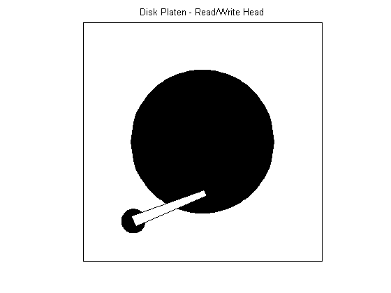
The head-disk assembly (HDA) and actuators are modeled by a 10th-order transfer function including two rigid-body modes and the first four resonances.
The model input is the current ic driving the voice coil motor, and the output is the position error signal (PES, in % of track width). The model also includes a small delay.
diskdemo_aux(2)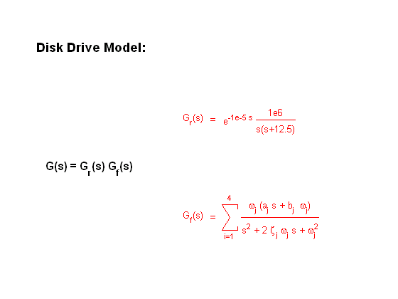
The coupling coefficients, damping, and natural frequencies (in Hz) for the dominant flexible modes are listed above. Given this data, construct a nominal model of the head assembly:
load diskdemo Gr = tf(1e6,[1 12.5 0],'inputdelay',1e-5); Gf1 = tf(w1*[a1 b1*w1],[1 2*z1*w1 w1^2]); % first resonance Gf2 = tf(w2*[a2 b2*w2],[1 2*z2*w2 w2^2]); % second resonance Gf3 = tf(w3*[a3 b3*w3],[1 2*z3*w3 w3^2]); % third resonance Gf4 = tf(w4*[a4 b4*w4],[1 2*z4*w4 w4^2]); % fourth resonance G = Gr * (ss(Gf1) + Gf2 + Gf3 + Gf4); % convert to state space for accuracy diskdemo_aux(3)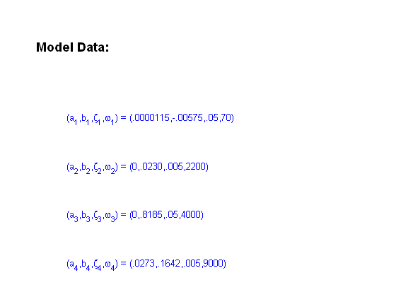
Plot the Bode response of the head assembly model:
cla reset set(G,'inputname','ic','outputname','PES') bode(G) title('Bode diagram of the head assembly model'); diskdemo_aux(4)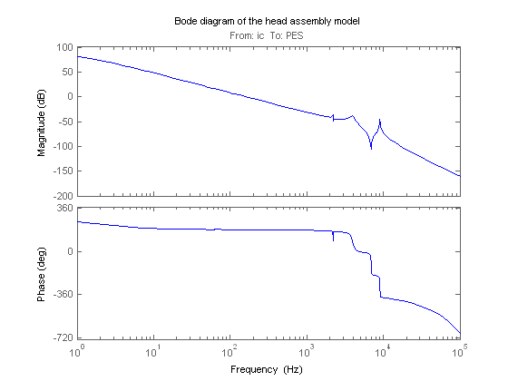
Servo control is used to keep the read/write head "on track." The servo controller C(z) is digital and designed to maintain the PES (offset from the track center) close to zero.
The disturbance considered here is a step variation d in the input current ic. Your task is to design a digital compensator C(z) with adequate disturbance rejection performance.
diskdemo_aux(5)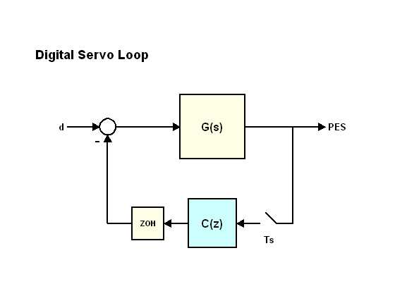
The sampling time for the digital servo is Ts = 7e-5 sec (14.2 kHz).
Realistic design specs are listed above.
diskdemo_aux(6)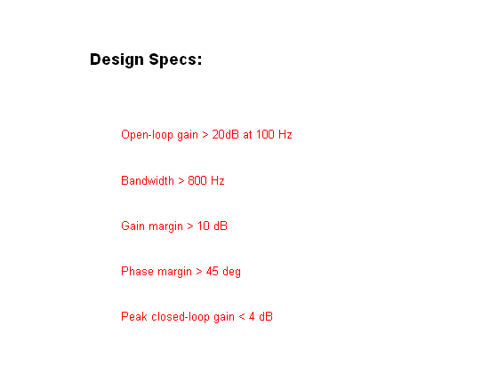
Since the servo controller is digital, you can perform the design in the discrete domain. To this effect, discretize the HDA model using C2D and the zero-order hold (ZOH) method:
cla reset Ts = 7e-5; Gd = c2d(G,Ts); bode(G,'b',Gd,'r') % compare with the continuous-time model title('Continuous (blue) and discretized (red) HDA models'); diskdemo_aux(7)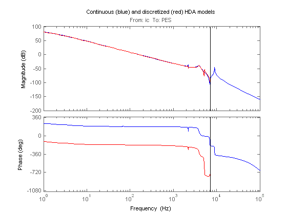
Now to the compensator design. Start with a pure integrator 1/(z-1) to ensure zero steady-state error, plot the root locus of the open-loop model Gd*C, and zoom around z=1 using the Zoom In option under the Tools menu.
C = tf(1,[1 -1],Ts); rlocus(Gd*C) diskdemo_aux(8)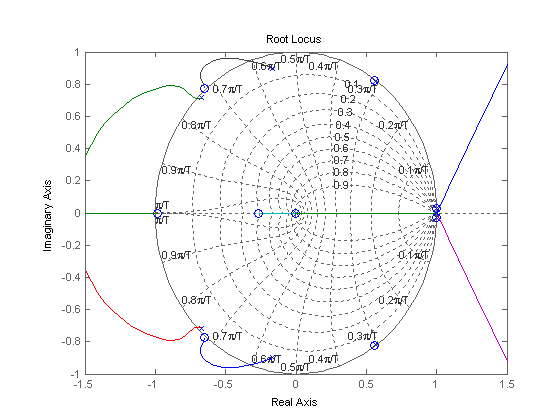
Because of the two poles at z=1, the servo loop is unstable for all positive gains. To stabilize the feedback loop, first add a pair of zeros near z=1.
C = C * zpk([.963,.963],-0.706,1,Ts); rlocus(Gd*C) diskdemo_aux(10)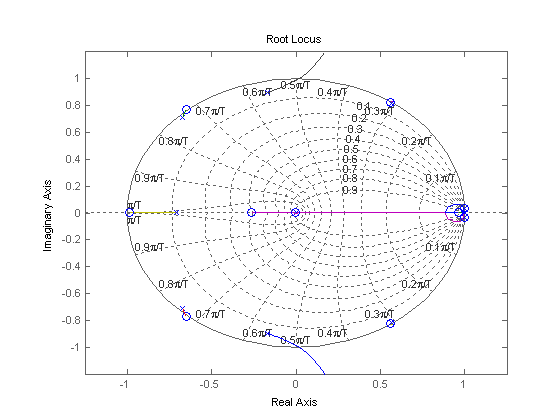
Next adjust the loop gain by clicking on the locus and dragging the black square inside the unit circle. The loop gain is displayed in the data marker. A gain of approximately 50 stabilizes the loop (set C1 = 50*C).
C1 = 50 * C;
Now simulate the closed-loop response to a step disturbance in current. The disturbance is smoothly rejected, but the PES is too large (head deviates from track center by 45% of track width).
cl_step = feedback(Gd,C1);
step(cl_step)
title('Rejection of a step disturbance (PES = position error)')
diskdemo_aux(11)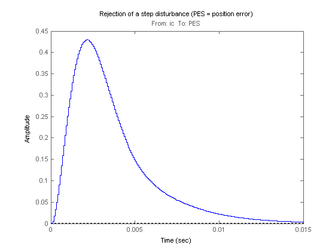Next look at the open-loop Bode response and the stability margins. The gain at 100 Hz is only 15 dB (vs. spec of 20 dB) and the gain margin is only 7dB, so increasing the loop gain is not an option.
margin(Gd*C1) diskdemo_aux(12)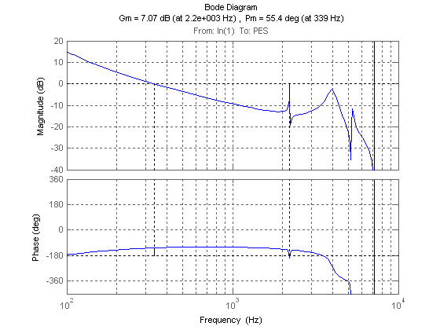
To make room for higher low-frequency gain, add a notch filter near the 4000 Hz resonance.
Note: The SISO Design Tool is ideal for interactively tuning these compensator parameters. See the web version of this demo for a live showcase.
w0 = 4e3 * 2*pi; % notch frequency in rad/sec notch = tf([1 2*0.06*w0 w0^2],[1 2*w0 w0^2]); % continuous-time notch notchd = c2d(notch,Ts,'matched'); % discrete-time notch C2 = C1 * notchd; bode(notchd) title('Discrete-time notch filter'); diskdemo_aux(13)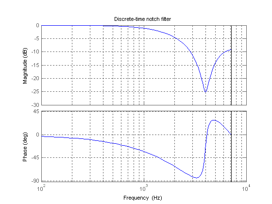
You can now safely double the loop gain. The resulting stability margins and gain at 100 Hz are within specs.
C2 = 2 * C2; margin(Gd * C2) diskdemo_aux(14)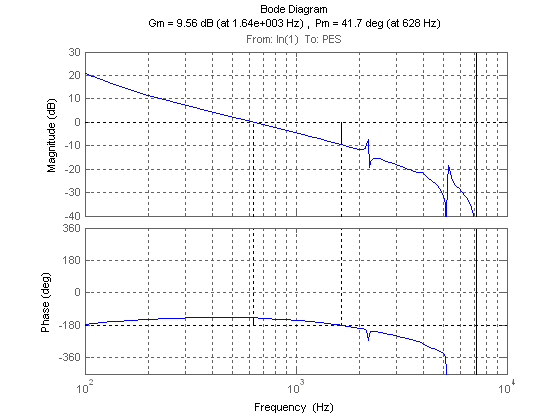
Step disturbance rejection has also greatly improved. The PES now stays below 20% of the track width.
cl_step1 = feedback(Gd,C1); cl_step2 = feedback(Gd,C2); step(cl_step1,'r--',cl_step2,'b') title('2nd-order compensator C1 (red) vs. 4th-order compensator C2 (blue)')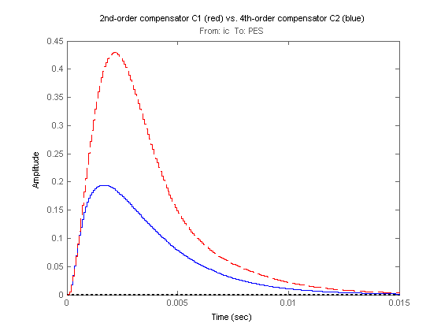
Check if the 3dB peak gain spec on T = Gd*C/(1+Gd*C) (closed-loop sensitivity) is met:
>> bodemag(feedback(Gd*C,1))
To see the peak value, right-click on the axis and choose the Peak Response option under the Characteristics menu, then hold the mouse over the blue marker, or just click on it.
Gd = c2d(G,Ts);
Ts = 7e-5;
T = feedback(Gd*C2,1);
bodemag(T)
title('Peak response of closed-loop sensitivity T(s)')
diskdemo_aux(15)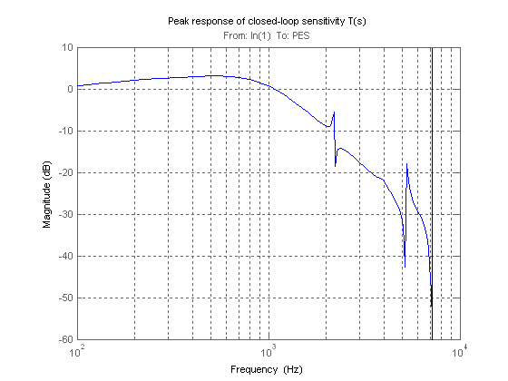Finally let's analyze the robustness to variations in the damping and natural frequencies of the 2nd and 3rd flexible modes. Generate an array of 16 models corresponding to all combinations of extremal values of z2,w2,z3,w3:
[z2,w2,z3,w3] = ndgrid([.5*z2,1.5*z2],[.9*w2,1.1*w2],[.5*z3,1.5*z3],[.8*w3,1.2*w3]); for j=1:16, Gf21(:,:,j) = tf(w2(j)*[a2 b2*w2(j)] , [1 2*z2(j)*w2(j) w2(j)^2]); Gf31(:,:,j) = tf(w3(j)*[a3 b3*w3(j)] , [1 2*z3(j)*w3(j) w3(j)^2]); end G1 = Gr * (ss(Gf1) + Gf21 + Gf31 + Gf4); diskdemo_aux(16)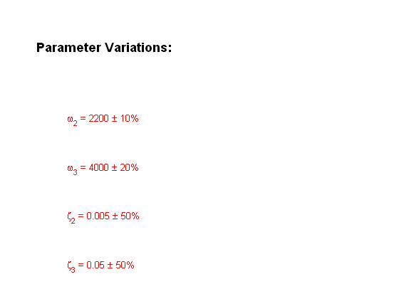
Discretize these 16 models at once and see how the parameter variations affect the open-loop response. Note: You can click on any curve to identify the underlying model.
Gd = c2d(G1,Ts);
bode(Gd*C2)
title('Open-loop response - Monte Carlo analysis')
diskdemo_aux(17)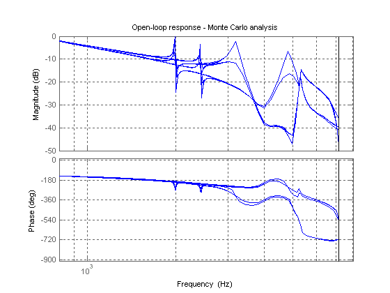Plot the step disturbance rejection performance for these 16 models:
>> step(feedback(Gd,C2))
All 16 responses are nearly identical: our servo design is robust!
step(feedback(Gd,C2))
title('Step disturbance rejection - Monte Carlo analysis') 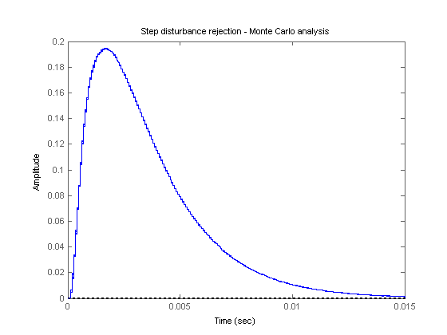